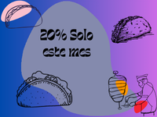

Tacos Joss como empresa surge el 20 de noviembre de 2010, a partir de entonces hemos logrado posicionarnos como la mejor taquería en Guadalajara.
A partir del 2020 vimos la necesidad de crear este sitio web para que mas gente conozca nuestra taquería
.Brindar a nuestros clientes una experiencia auténtica de sabor mexicano a través de tacos elaborados con ingredientes frescos, recetas tradicionales y un servicio cálido y amable, en un ambiente familiar y acogedor.
En el 2030 ser la mejor taquería a nivel nacional y tener muchas sucursales por toda la republica.
.Ven a la tienda y en la compra una orden grande de tacos llévate un agua de litro del sabor de tu preferencia.
